7.1 贝叶斯决策论
贝叶斯决策论(Bayesian decision theory)是概率框架下实施决策的基本方法
机器学习所要实现的是基于有限的训练样本尽可能准确地估计出后验概率\(P(c \ | \ \vec{x}) \)
- 判别式模型(discriminative models)：直接建模(决策树，神经网络，支持向量机)
- 生成式模型(generative models):先对联合概率分布\(P(\vec{x},c) \)建模
$$P(c \ | \ \vec{x})=\frac{P(c)P(\vec{x} \ | \ c)}{P(\vec{x})}$$
其中P(c)是类先验概率，\(P(\vec{x} \ | \ c)\)是类条件概率，或称似然(likelihood)
7.2 极大似然估计
估计类条件概率的常用策略是先假定其具有某种确定的概率分布，再基于训练样本对概率分布的参数进行估计，记关于类别c的类条件概率为\(P(\vec{x} \ | \ c)\)，假设\(P(\vec{x} \ | \ c)\)具有确定的形式且被参数向量\(\vec{\theta_c} \)唯一确定，则我们的任务就是利用训练集估计参数\(\vec{\theta_c} \)，于是我们将\(P(\vec{x} \ | \ c)\)记为\(P(\vec{\theta_c} \ | \ c)\),这实际上就是参数估计的过程
参数估计两大学派：
- 频率主义学派
- 贝叶斯学派
频率主义学派极大似然估计(Maximum Likelihood Estimation,简称MLE):
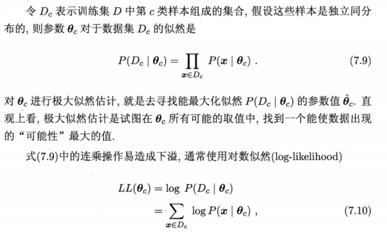
需要注意的是这种参数化方法虽能使类条件概率估计变得相对简单，但准确性严重依赖于所假设的概率分布形式是否符合潜在的真实数据分布
7.3 朴素贝叶斯分类器
基于贝叶斯公式来估计后验概率的主要困难在于，类条件概率是所有属性上的联合概率，很难从有限的训练样本中直接估计出。朴素贝叶斯分类器(naive Bayes classifier)采用了属性条件独立假设(attribute conditional independence assumption),对已知类别，假设所有属性互相独立
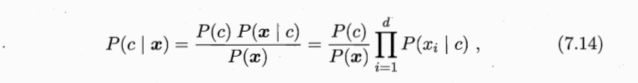
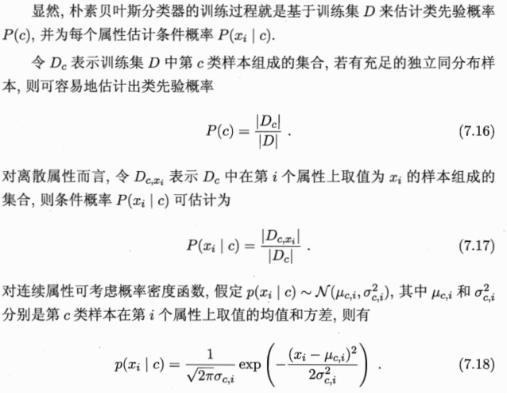
拉普拉斯修正：避免了因训练集样本不充分而导致概率估值为0的问题（假设属性值与类别均匀分布）
7.4 半朴素贝叶斯分类器
朴素贝叶斯分类器采用了属性条件独立性假设，但现实任务中这个假设往往很难成立，于是，人们尝试对属性条件独立性假设进行一定程度的放松，于是产生了半朴素贝叶斯分类器
半朴素贝叶斯分类器适当考虑一部分属性间的相互依赖信息，从而既不需要进行完全联合概率计算，又不彻底忽略了比较强的属性依赖关系。独依赖估计是半朴素贝叶斯分类器最常用的策略，就是假设每个属性在类别之外最多只依赖一个其他属性
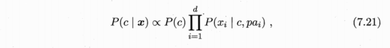
其中\(p a_i \)是属性\(x_i \)所依赖的属性，称为\(x_i \)的父属性，现在问题的关键就是如何确定每个属性的父属性，不同的做法产生不同的独依赖分类器
最直接的做法假设所有属性都依赖于同一个属性，称为超父(super-parent),由此形成SPODE(Super-Parent ODE)方法：
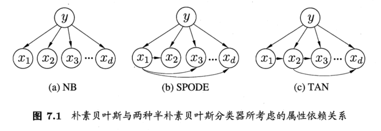
TAN(Tree Augmented naive Bayes)是在最大带权生成树算法的基础上
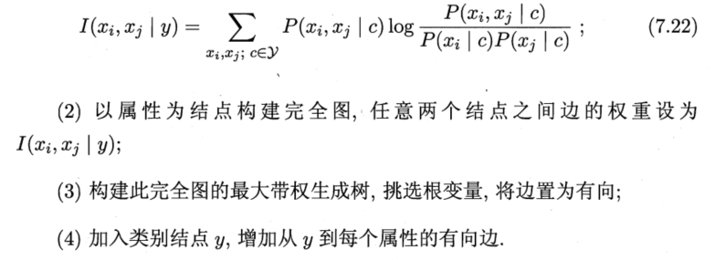
条件互信息刻画了属性\(x_i \)和属性\(x_j \)在已知类别情况下的相关性，保留了强相关性之间的依赖关系
AODE(Averaged One-Dependent Estimator)是基于集成学习机制，更为强大的独依赖分类器，与SPODE通过模型选择超父属性不同，AODE尝试将每个属性作为超父来构建SPODE,然后将那些具有足够训练数据支撑的SPODE集成起来作为最终结果
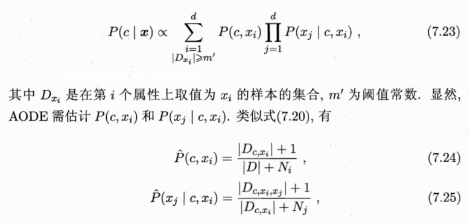
与朴素贝叶斯分类器类似，AODE的训练过程也是计数的过程
7.5 贝叶斯网
贝叶斯网(Bayesian network)也称信念网(belief network),它借助有向无环图(Directed Acyclic Graph,简称DAG)来刻画属性之间的依赖关系，并使用条件概率表(Conditional Probability Table,简称CPT)来描述属性的联合概率分布
一个贝叶斯网\(B \)由结构\(G \)和参数\(\Theta \)两部分构成，即\(B=<G,\Theta> \),网络结构\(G \)是一个有向无环图，其每个节点对应了一个属性，若两个属性有直接依赖关系，则它们由一条边连接起来；参数\(\Theta \)定量描述了这种依赖关系，假设属性\(x_i \)在\(G \)中的父节点为\(\pi_i \)，则\(\Theta \)包含了每个属性的条件概率表
$$\Theta_{x_i|\pi_i}=P_B(x_i \ | \ \pi_i)$$
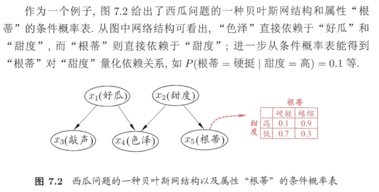
7.5.1 结构
贝叶斯网结构有效的表达了属性间的条件独立性2，给定父节点，贝叶斯网假设每个属性与它的非后裔属性独立，所以有：
$$P_B(x_1,x_2,…,x_d)=\prod_{i=1}^d P_B(x_i \ | \ \pi_i)=\prod_{i=1}^d \Theta_{x_i|\pi_i}$$
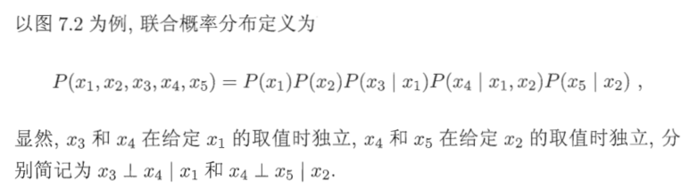
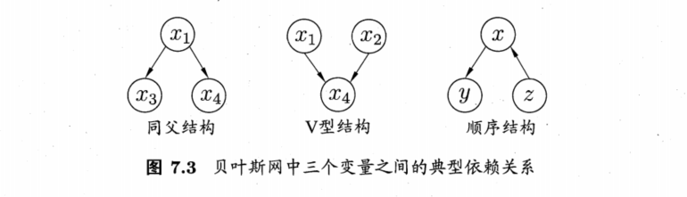
7.5.2 学习
从训练数据集找出结构最恰当的贝叶斯网：评分搜索。先定义一个评分函数(score function)，以此来评估贝叶斯网与训练数据的契合程度，然后基于这个评分函数寻找结构最优的贝叶斯网
常用评分函数基于信息论准则，将学习问题看作一个数据压缩任务，学习的目标是能找到一个能以最短编码长度描述训练数据的模型，使得那些经常出现的样本有着更短的编码，于是我们应选择那个综合编码长度最短的贝叶斯网，这就是最小描述长度准则(Minimal Description Length,简称MDL)
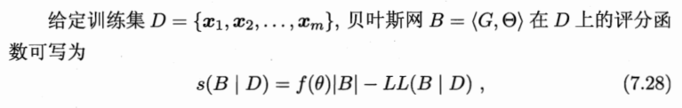
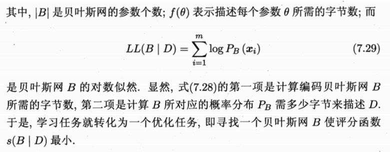
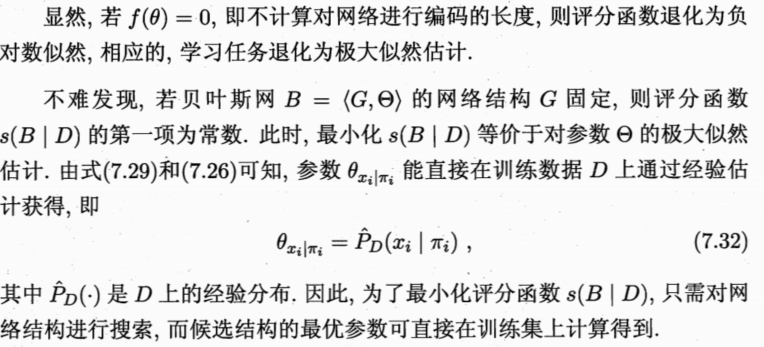
7.5.3 推断
通过已知变量观测值来推测待查询变量的过程称为推断(inference)，已知变量观测值称为证据(evidence)
最理想的是直接根据贝叶斯网定义的联合概率分布来精确计算后验概率，但是这是NP难的，当网络结点较多，连接稠密时，难以进行精确判断，此时需借助近似判断。现实应用中，贝叶斯网的近似推断通常使用吉布森采样(Gibbs sampling)来完成
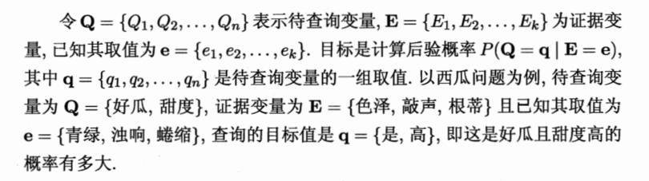
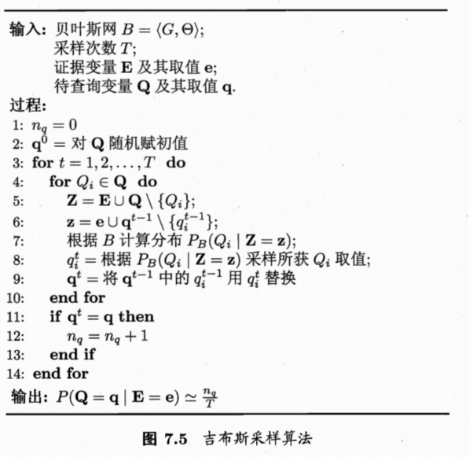
7.6 EM算法
隐变量(latent variable)，令 \(X\)表示已观测变量集，\(Z\)表示隐变量集，\(\Theta\)表示模型参数，若想要对\(\Theta\)做极大似然估计，则应最大化对数似然
$$LL(\Theta \ |\ X,Z)=lnP(X,Z\ |\ \Theta)$$
然而由于\(Z\)是隐变量，上式无法直接求解，此时我们可以通过对\(Z\)求期望，来最大化已观测数据的对数边际似然(marginal likelihood)
$$LL(\Theta \ |\ X)=lnP(X\ |\ \Theta)=ln\sum_Z P(X,Z\ |\ \Theta)$$
EM算法是常用的估计参数隐变量的利器，它是一种迭代的方法：若参数\(\Theta\)已知，则可根据训练数据推断出最优隐变量\(Z\)的值(E步)；反之，若\(Z\)的值已知，则可对参数\(\Theta\)做极大似然估计(M步)
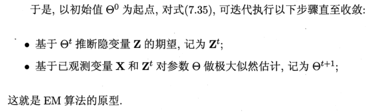
7.7 阅读材料
朴素贝叶斯分类器尽管假设很简单，但是很多情况下都能获得相当好的性能
朴素贝叶斯不考虑属性间相互依赖关系，而贝叶斯网则表示任意属性间的依赖性，贝叶斯网学习可分为结构学习和参数学习，参数学习通常较简单，而结构学习则被证明是NP难问题